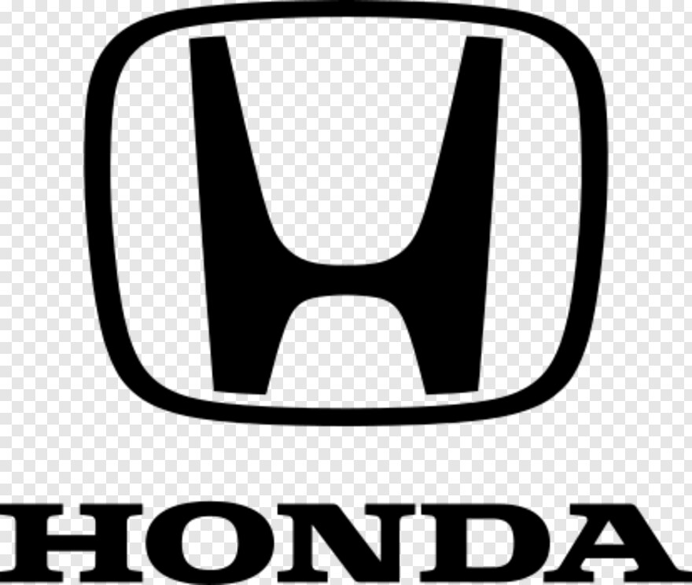
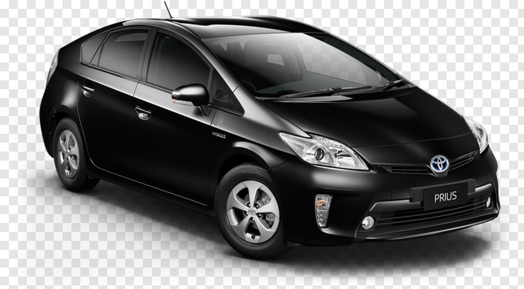
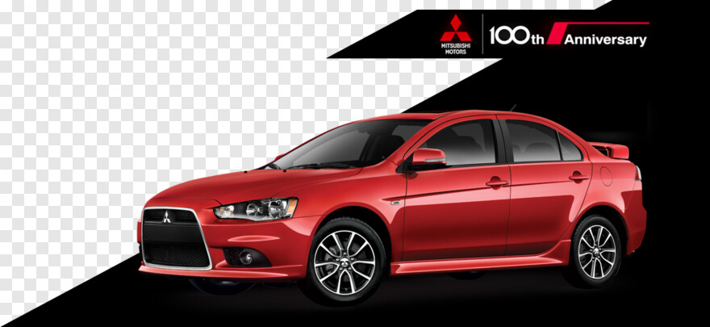
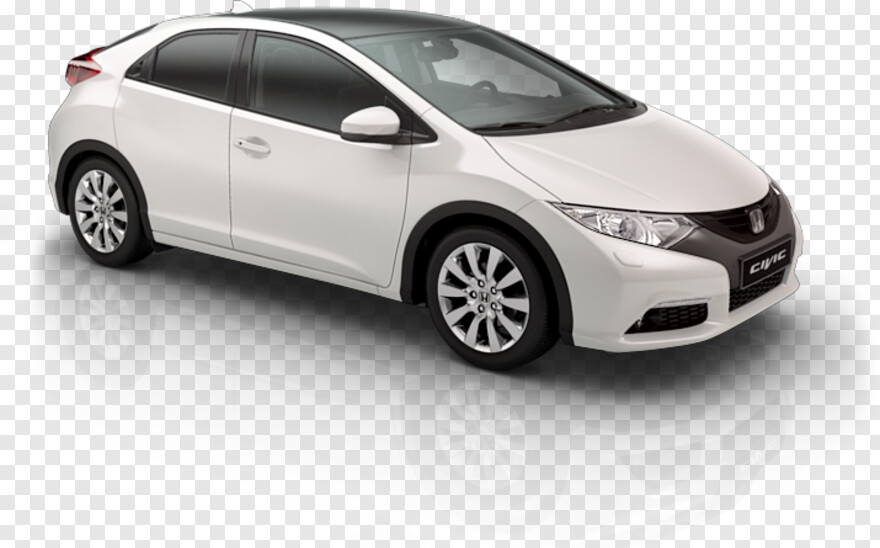

It was founded by Kiichiro Toyoda and incorporated on August 28, 1937. Toyota is one of the largest automobile manufacturers in the world, producing about 10 million vehicles per year.


Mitsubishi's automotive origins date back to 1917, when the Mitsubishi Shipbuilding Co., Ltd., introduced the Mitsubishi Model A, Japan's first series-production automobile.
Honda was the first Japanese automobile manufacturer to release a dedicated luxury brand, Acura, in 1986. Aside from their core automobile and motorcycle businesses, Honda also manufactures garden equipment, marine engines, personal watercraft, power generators, and other products.
